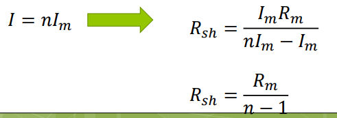

<!DOCTYPE html>
<html lang="en" dir="ltr">
  <head>
    <meta charset="utf-8">
    <meta name="viewport" content="width=device-width, initial-scale=1">
    <script>
      MathJax = {
          tex: {
              inlineMath: [['$', '$'], ['\\(', '\\)']]
          }
      };      
    </script>
    <script id="MathJax-script" async src="https://cdn.jsdelivr.net/npm/mathjax@3/es5/tex-chtml.js"></script>
    <title>Teknik Elektronika | 01. Instrumentasi dan Pengukuran</title>
    <link rel="stylesheet" href="course.css">
    <script src="https://kit.fontawesome.com/de8de52639.js"></script>
  </head>
  <body>
    <section class="one">
      <div class="jumbotron">
        <h1><a href="maincouse.html">Instrumentasi dan Pengukuran</a></h1>
      </div>
      <input type="checkbox" id="check">
      <label for="check">
        <i class="fas fa-bars" id="btn"></i>
        <i class="fas fa-times" id="cancel"></i>
      </label>
      <div class="dashboard">
        <i class="fas fa-home" id="btn"></i>
      </div>
    <div class="sidebar">
      <header>TEKNIK Elektronika</header>
      <ul class="module">
        <li style="list-style:none;"><a href="01.html">01. Instrumentasi dan Pengukuran</a></li>
        <li style="list-style:none;"><a href="02.html">02. Saklar dan Fuse</a></li>
      </ul>
      </div>
      
    </section>
    <section class="two">
      <h2>Peranan pengukuran</h2>
      <p>Instrumentasi adalah cabang dari ilmu keteknikan yang tidak hanya memberikan ilmu tetapi semua cabang keteknikan dan obat-obatan</p>
      <p> Instrumentasi berkaitan dengan alat ukur sedang pengukuran berkaitan dengan cara menggunakan alat ukur</p>
      <p> Pengukuran dilakukan terhadap dimensi, temperature, tekanan, daya, tegangan, arus, impedansi, bermacam-macam sifat material, dan sebagian besar sifat fisika lainnya adalah penting bagi keteknikan sebagai ilmu pengetahuan.</p>
      
      <h3>Peranan pengukuran</h3>
      <p>sejumlah istilah yang digunakan dalam pengukuran didefenisikan sebagai berikut : </p>
      <ul>
        <li>Instrumen : Sebuah alat untuk menentukan nilai atau besaran suatu kuantitas atau variabel.</li>
        <li>Ketelitian <i>(accuracy)</i> : Harga terdekat dimana suatu pembacaan instrument mendekati harga sebenarnya dari variabel yang diukur.</li>
        <li>Ketepatan <i>(precision)</i> : Suatu ukuran kemampuan untuk mendapatkan hasil pengukuran yang serupa. </li>
        <li>Sensitifitas (sensitivity) : Perbandingan antara sinyal keluaran atau respon instrument terhadap perubahan masukan atau variabel yang diukur. </li>
        <li>Resolusi <i>(Resolution)</i> :Perubahan terkecil dalam nilai yang diukur dimana instrument akan memberi respon (tanggapan). </li>
        <li>Kesalahan <i>(error)</i> :Penyimpangan variabel yang diukur dari harga sebenarnya</li>
      </ul>
      
      <h3>Akurasi dan Presisi</h3>
        <p>akurasi menyatakan tingkat kesesuaian atau dekatnya suatu hasil pengukuran terhadap harga sebenarnya, sedang ketepatan/presisi menyatakan tingkat kesamaan di dalam sekelompok pengukuran atau sejumlah instrument. </p>
        <p>Perbandingan hasil pengukuran yang akurat dan presisi: </p>
        <table border="1" cellpadding="10">
          <tr>
              <td>Pengukuran ke : </td>
              <td>Penunjukan Alat ukur 1</td>
              <td>Penunjukan Alat ukur 2</td>
          </tr>
          <tr>
              <td>1</td>
              <td>5</td>
              <td>4.1</td>
          </tr>
          <tr>
            <td>2</td>
            <td>5</td>
            <td>4.1</td>
          </tr>
          <tr>
            <td>3</td>
            <td>5</td>
            <td>4.1</td>
          </tr>
          <tr>
            <td>4</td>
            <td>5</td>
            <td>4.1</td>
          </tr>
          <tr>
            <td>5</td>
            <td>5</td>
            <td>4.1</td>
          </tr>
      </table>

    <h3>Kesalahan dalam Pengukuran </h3>
      <ol> 
        <li>Pengukuran adalah proses perbandingan antara suatu besaran yang tidak diketahui dengan besaran standar yang diperoleh </li>
        <li>Pengukuran yang diperoleh adalah besaran yang disebut dengan “harga pengukuran”.</li>
        <li>hasil yang diperoleh jarang menggambarkan harga yang diharapkan  Kesalahan dalam Pengukur </li>
        <li> yang mempengaruhi pengukuran adalah karakteristik dari instrument, orang yang menggunakan instrument, pengaruh lingkungan</li>
        <li>Kesalahan ditunjukkan disebut sebagai absolute atau prosentase kesalahan </li> 
        <li>Kesalahan absolute dapat didefenisikan sebagai perbedaan antara variable harga yang diharapkan dengan variable harga pengukuran</li>
      </ol>
    
    <h3>Kesalahan absolute</h3>
    <h3>e = Y<sub>n</sub> - X<sub>n</sub></h3>
    <pre>
      dimana : e = Kesalahan Absolute
              Yn = Harga yang diharapkan
              Xn = Harga pengukuran
    </pre>
     <br>

    <h3> Akurasi Relatif </h3> 
    <p>Jika diinginkan untuk menyatakan Pengukuran dengan syarat akurasi relative lebih besar daripada kesalahan, maka </p>
     <br>

    <h3> Akurasi dan Presisi </h3>
    <p> yang dinyatakan sebagai persen akurasi, yaitu :<br>
          <b> A = 100% - persentase kesalahan </b> <br>
          <b> A = Ax100% </b> <br>
    Kepresisian dapat dinyatakan dalam rumus sebagai berikut </p>
     <br>
    <ul>
      <li> Yn = harga dari pengukuran yang ke-n </li>
      <li>Xn = harga rata-rata dari npengukuran </li>
    </ul>

    <h3> Sistematika Kesalahan </h3>
    <ul>
      <li> Kesalahan-kesalahan disebabkan karena adanya beberapa masalah mengenai instrument, pengaruh lingkungan, atau kesalahan observasi </li>
      <li> Sistematika kesalahan akan muncul jika beberapa pengukuran dibuat dari besaran yang sama dibawah kondisi yang sama pula. </li>
      <li> Kesalahan instrument </li>
      <p> Kesalahan serupa mungkin disebabkan oleh gesekan bantalan penggerak meter, ketegangan pegas yang tidak tepat, kalibrasi yang tidak sesuai, atau kesalahan instrument. Kesalahan instrument dapat terjadi karena perawatan, penggunaan, dan penanganan insrument yang tidak benar. </p>
      <li>Kesalahan pengaruh lingkungan </li>
      <p>Yaitu kesalahan yang mungkin disebabkan oleh pengaruh kondisi lingkungan dimana instrument tersebut digunakan. Menempatkan instrument pada tempat yang tajam seperti : temperature, tekanan, atau kelembaban yang tinggi; atau listrik statis medan elektromagnetik yang kuat, mungkin pengaruh yang mengganggu, akan menyebabkan kesalahan. </p>

      <li>Kesalahan observasi</li>
      <p>Yaitu kesalahan yang disebabkan pemakaian alat ukur. Barangkali yang sering terjadi adalah kesalahan paralak (sistem mekanis/elektronik) yang terjadi dalam skala meter dan kesalahan penafsiran (sudut pandang) saat memperoleh pembacaan dari skala meter. </p>
    </ul>

    <h3> Analisa Statistik Suatu Kesalahan Dalam Pengukuran </h3>
    <ul>
      <li>Harga rata-rata adalah harga tipikal atau harga yang mewakili dari sekumpulan data </li>
      <li>Harga rata-rata lebih sering digunakan pada aritmetika yang merupakan penjumlahan dari beberapa angka dibagi dengan banyaknya angka data</li>
    </ul>
    
    <h3> Analisa Statistik Suatu Kesalahan Dalam Pengukuran </h3>
    <p>Harga rata-rata aritmetik dari sejumlah nangka X1,X2,X3...........Xn adalah : </p>
     <br>
    
    <h3>Analisa Statistik Suatu Kesalahan Dalam Pengukuran</h3>
    <p>
      <b> Deviasi </b> adalah perbedaan antara tiap data test dan rata-rata nilai aritmetika X ditunjukan dengan d1, d2, d3,........dn dan didefenisikan sebagai berikut <br>
      <b>d1 = X1 - X <br> d2 = X2 - X <br> d3 = X3 - X <br> dn = Xn - X <br> </b>
      Jumlah total deviasi sejumlah angka dari rata-rata nilai aritmetika adalah nol </p>
    
    <h3>Sistem Standar Internasional</h3>
    <ul>
      <li>Tentang arus</li>
      <li>Tentang tahanan</li>
      <li>Tentang tegangan</li>
      <li>Tentang periode</li>
      <li>Tentang frekuensi</li>
      <li>Tentang daya</li>
      <li>Desibel</li>
      <li>Dan standar lain yang berhubungan dengan bidang elektro </li>
    </ul>
  
  <h2>Meter Arus Searah</h2> 

  <h3>Prinsip Ammeter DC</h3>
  <p>Dasar sistem kumparan putar,  pada umumnya diarahkan sebagai gerakan meter D’arsonval atau gerakan meter kumparan putar megnet permanent/PPMC (Permanent Magnet Moving Coil) </p>
    
  
  <h3>Prinsip Ammeter DC </h3>
  <ul>
    <li> Penggerak meter D’Arsonval adalah peralatan yang dikendalikan oleh arus</li>
    <li> Arus dari sebuah rangkaian yang diukur, di dalam meter akan melewati gulungan pada kumparan putar. Arus yang melewati kumparan menyebabkan kumparan tersebut menjadi electromagnet yang berkutup utara dan selatan. Kutup electromagnet saling mempengaruhi dengan kutup magnet permanent yang menyebabkan kumparan berputar. Tangkai/jarum akan menunjuk skala bila arus didalam arah yang tepat pada kumparan. Dengan alasan ini, semua penggerak meter DC ada penunjukan tanda polaritas </li>
  </ul>
  
  <h3>Penggunaan Penggerak Meter D’Arsonval dalam Ammeter</h3> 
  <p> Resistansi penggerak/meter 𝑅𝑚 dan resistansi rendah yang paralel dengan 𝑅𝑚 adalah resistansi shunt 𝑅<sub>𝑠ℎ</sub></p>
   <br>
  <p>Resistansi shunt  𝑅<sub>𝑠ℎ</sub> diperlukan untuk memperbesar range pembacaan arus instrumen </p>
    
  <h3>Penggunaan Penggerak Meter D’Arsonval dalam Ammeter</h3>
   <br>
   <br>
  <p>𝐼<sub>𝑚</sub> disebut juga sebagai 𝐼<sub>𝑓𝑠𝑑</sub> (arus yang dibutuhkan agar penunjuk sampai skala penuh)</p>
  
  <h3> Penggerak Meter D’Arsonval dalam Ammeter </h3>
  <p> perancangan shunt adalah untuk memperoleh pengukuran arus I yang besarnya n kali lebih besar dari Im . Jumlah n disebut faktor kelipatan dan hubungan arus total dengan arus meter adalah : </p>
   <br>
  
<h3>Perencanaan Resistansi Shunt</h3>
<ul>
  <li> Resistansi shunt yang didiskusikan sebelumnya berfungsi cukup baik pada ammeter berbatas ukur tunggal, tetapi pada ammeter dengan banyak batas ukur digunakan shunt Ayrton, atau shunt universal</li>
  <li>keuntungan dari shunt Ayrton adalah menghilangkan kemungkinan penggerak meter menjadi rangkaian tanpa beberapa resistor shunt</li>
  <li>Keuntungan lainnya, alat ini dapat digunakan dengan batas ukur penggerak meter yang lebar</li>
</ul>
    
<h3>Ammeter Shunt Ayrton </h3>
 <br>
<p>Harga resistansi masing-masing dari shunt dihitung mulai dari batas ukur yang paling sensitif (paling kecil) kemudian ke batas ukur yang lebih tinggi</p>

<h3>Ammeter Shunt Ayrton</h3>
<p>Selama resistansi 𝑅<sub>b</sub> + 𝑅<sub>𝑐</sub> = 𝑅<sub>𝑚</sub> + 𝑅<sub>𝑎</sub>, tegangan pada tiap cabang harus sama dan dapat dituliskan sebagai 𝑉<sub>(𝑅𝑏+𝑅𝑐)</sub> = 𝑉<sub>(𝑅𝑎+𝑅𝑚)</sub>, atau hubungan dengan arus </p>
 <br>
    </section>
    <footer>
      <a href="01.html" class="previous">&laquo; Previous</a>
      <a href="02.html" class="next">Next &raquo;</a>
  </footer>
  </body>
</html>
